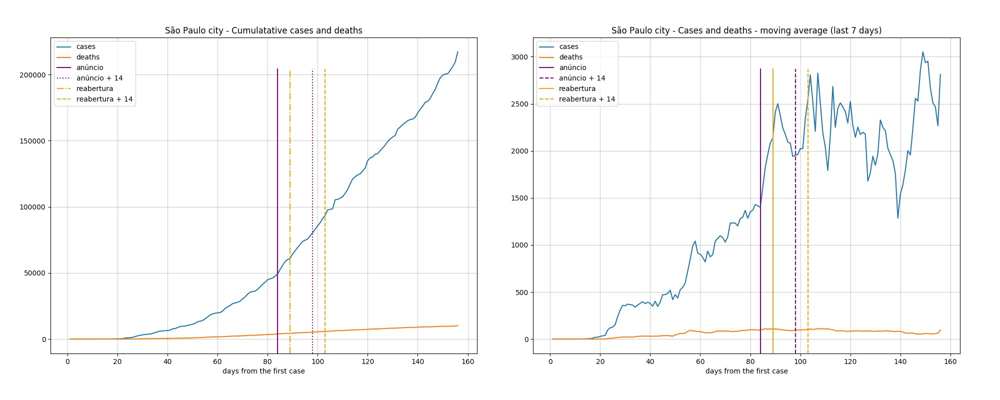
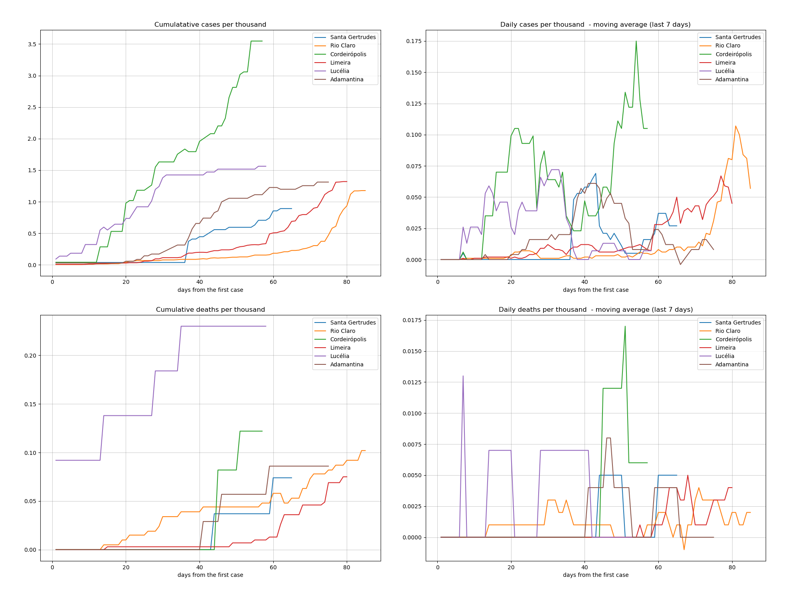

Indicadores relativos aos dados da pandemia Covid19 no estado de São Paulo até a data de 08/05/2020.
Estas informações são para uso próprio e não devem ser utilizadas para direcionamentos médicos e/ou políticas públicas.
| 01/05/2020 | 08/05/2020 | variação | ||
|---|---|---|---|---|
| casos | 30374.0 | 41830.0 | 37% | 11456.0 (37%) |
| mortes | 2511.0 | 3416.0 | 36% | 905.0 (36%) |
| cidades contaminadas | 329 (51%) | 402 (62%) | 22% |
O nível de mortalidade demonstrado no mapa é definido a partir da média móvel dos últimos 7 dias da mortalidade de cada cidade.
Mova o mouse pelo mapa para detalhes de cada região.
O nível de transmissão demonstrado no mapa é definido a partir da média móvel dos últimos 7 dias do acumulado de casos de cada cidade.
Mova o mouse pelo mapa para detalhes de cada região.
Mais: Santa Gertrudes, Rio Claro, Cordeiropolis, Limeira, Lucelia, Adamantina
O ranking é feito a partir da média móvel de 7 dias do percentual de mortalidade de cada cidade.
| city | date | day | case_day | cases | death_day | deaths | avg7_cases | avg7_deaths | avg7_perc_death | perc_death | |
|---|---|---|---|---|---|---|---|---|---|---|---|
| 1 | guara | 2020-05-08 | 11 | 0 | 1, | 0 | 1, | 0, | 0, | 100,00 | 100,00 |
| 2 | pitangueiras | 2020-05-08 | 16 | 0 | 1, | 0 | 1, | 0, | 0, | 100,00 | 100,00 |
| 3 | caiabu | 2020-05-08 | 28 | 0 | 1, | 0 | 1, | 0, | 0, | 100,00 | 100,00 |
| 4 | santo antonio da alegria | 2020-05-08 | 22 | 0 | 1, | 0 | 1, | 0, | 0, | 100,00 | 100,00 |
| 5 | iepe | 2020-05-08 | 20 | 0 | 1, | 0 | 1, | 0, | 0, | 100,00 | 100,00 |
| 18 | rio claro | 2020-05-08 | 42 | 3 | 22, | 0 | 9, | 0, | 0, | 44,10 | 40,91 |
| 40 | lucelia | 2020-05-08 | 16 | 1 | 13, | 0 | 3, | 0, | 0, | 24,79 | 23,08 |
| 158 | limeira | 2020-05-08 | 38 | 0 | 57, | 0 | 1, | 3, | 0, | 2,42 | 1,75 |
| 216 | santa gertrudes | 2020-05-08 | 23 | 0 | 1, | 0 | 0, | 0, | 0, | 0,00 | 0,00 |
| 250 | adamantina | 2020-05-08 | 25 | 1 | 10, | 0 | 0, | 0, | 0, | 0,00 | 0,00 |
| 253 | cordeiropolis | 2020-05-08 | 15 | 0 | 7, | 0 | 0, | 0, | 0, | 0,00 | 0,00 |
Mais: Santa Gertrudes, Rio Claro, Cordeiropolis, Limeira, Lucelia, Adamantina
O ranking é feito a partir da média móvel de 7 dias do percentual de casos acumulados de cada cidade.
| city | date | day | case_day | cases | death_day | deaths | avg7_cases | avg7_deaths | avg7_perc_death | perc_death | |
|---|---|---|---|---|---|---|---|---|---|---|---|
| 1 | sao paulo | 2020-05-08 | 43 | 1093 | 25366, | 124 | 2110, | 897, | 71, | 8,37 | 8,32 |
| 2 | osasco | 2020-05-08 | 43 | 70 | 1145, | 11 | 130, | 45, | 6, | 10,40 | 11,35 |
| 3 | sao bernardo do campo | 2020-05-08 | 43 | 73 | 1017, | 7 | 81, | 44, | 5, | 7,18 | 7,96 |
| 4 | santos | 2020-05-08 | 41 | 17 | 893, | 5 | 62, | 41, | 2, | 7,47 | 6,94 |
| 5 | santo andre | 2020-05-08 | 43 | 33 | 836, | 1 | 45, | 38, | 1, | 5,90 | 5,38 |
| 6 | guarulhos | 2020-05-08 | 43 | 26 | 1015, | 5 | 112, | 30, | 5, | 9,88 | 11,03 |
| 46 | limeira | 2020-05-08 | 38 | 0 | 57, | 0 | 1, | 3, | 0, | 2,42 | 1,75 |
| 195 | rio claro | 2020-05-08 | 42 | 3 | 22, | 0 | 9, | 0, | 0, | 44,10 | 40,91 |
| 223 | santa gertrudes | 2020-05-08 | 23 | 0 | 1, | 0 | 0, | 0, | 0, | 0,00 | 0,00 |
| 226 | adamantina | 2020-05-08 | 25 | 1 | 10, | 0 | 0, | 0, | 0, | 0,00 | 0,00 |
| 263 | cordeiropolis | 2020-05-08 | 15 | 0 | 7, | 0 | 0, | 0, | 0, | 0,00 | 0,00 |
| 350 | lucelia | 2020-05-08 | 16 | 1 | 13, | 0 | 3, | 0, | 0, | 24,79 | 23,08 |
Os dados da cidade de São Paulo destoa das demais cidades o que prejudica a comparação em um mesmo gráfico, por isso os apresento separadamente.

Excluída a cidade de São Paulo

